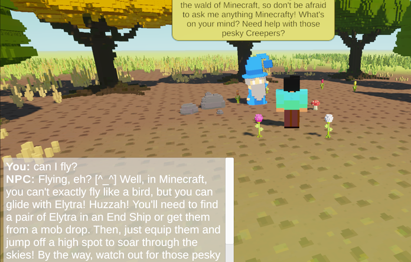

Minecraft AI Wizard is an interactive 3D browser game featuring an AI-powered NPC that answers questions about Minecraft using a language model grounded in information retrieved from the Minecraft Wiki.
Built with Unity and Python, the application combines interactive game development, information retrieval, and large language model integration.
The project explores practical LLM application development, particularly knowledge retrieval, backend integration, and connecting AI capabilities to an interactive application.
Launch Live Demo View Source CodeThe backend may take a short time to start after periods of inactivity.
The application connects a Unity WebGL frontend with a Python backend that retrieves relevant Minecraft knowledge and provides context for LLM-generated responses.
Interactive 3D environment and NPC conversation
Handles requests and coordinates retrieval and LLM interactions
Searches Minecraft Wiki content for relevant information
GPT-OSS-20B generates responses using retrieved knowledge as context
Returns the generated answer to the player through the game interface
High-level conceptual architecture of the application.
This project explores practical challenges involved in integrating LLMs into interactive software applications.
Rather than relying entirely on the language model's pretrained knowledge, the application retrieves relevant information from the Minecraft Wiki using BM25. This retrieved content provides additional context for generating Minecraft-related responses.
The project connects a Unity WebGL application to a Python backend, enabling an interactive game experience powered by external AI inference.
The application relies on hosted LLM inference. This introduces practical considerations such as API availability, request limits, and response latency.
The demo uses free-tier hosting and inference resources. The Render backend may take some time to wake up after inactivity, and Groq free-tier usage limits may temporarily restrict requests.
Unity • WebGL • Python • BM25 • Groq API • GPT-OSS-20B • Render
